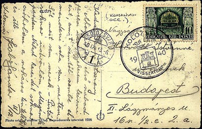
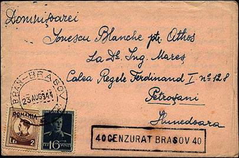
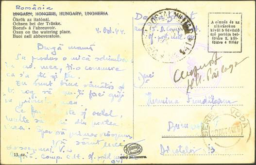

|
Local Issues of Northern Transylvania 1944-1945 |
|
|
Jay T. Carrigan, USA |
|
|
The territory of Transylvania, in the northwestern part of present-day Romania, was incorporated into Hungary until the Treaty of Trianon (June 4, 1920), at which time it was awarded to Romania. As a result of the 2nd Vienna Award (August 30, 1940), the northern portion of this territory was returned to Hungary. Following World War II, it was again incorporated into Romania. These facts alone give this region a rich and interesting postal history.
 Picture post card to Budapest, with special VISSZATÉRT ("returned") cancel of Kolozsvár (Cluj in Romanian) and separate Sept. 13, 1940 Kolozsvár datestamp. The Hungarian stamp commemorates the return of Northern Transylvania.
What is
little known, even among philatelists, is that Northern Transylvania
achieved a degree of quasi-independence (in civil matters) under the
occupation of the Red Army. Romania, one of the Axis powers, surrendered
unconditionally on August 23, 1944, shortly after her borders were crossed
by Soviet troops. |
Permission to resume civil control over Northern Transylvania was granted on March 11, 1945, and Romanian administration resumed in fact on April 9th. Thus there existed an interregnum period of almost six months, during which Northern Transylvania was neither part of Hungary nor part of Romania, but was also not an independent state.

 |